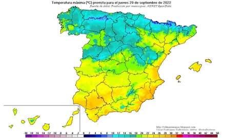

EL PERIÓDICO UNIVERSAL CONCEDE LAS MEJORES NOTICIAS DE TODO EL MUNDO
Deporte
Fútbol
Vinicius Junior se acerca a Haaland y Mbappé convirtiéndose en el tercer jugador más valioso del planeta:
Gracias a las buenas actuaciones de Vinicius JR han hecho que su valor en el mercado ascienda hasta los 120 millones, Mabappé 160,
y Haaland 150, su máximo histórico, el delantero del Real Madrid. Tras su subida de valor su equipo,
el Real Madrid no piensa venderle,
ya que fue una inversión de futuro, y esta ya está dando sus frutos.Los goles, las asistencias, los minutos disputados,
las victorias... todos son indicadores utilizados para medir el rendimiento
de los mejores jugadores del planeta y, en cierto
modo, todos ellos se traducen en el valor de mercado, el 'precio' de las grandes estrellas. Este indicador apunta
ahora a un hombre, Vinicius Junior, que según el portal especializado
Transfermarkt el jugador más valioso
de LaLiga y el tercero del mundo. Corría el año 2017 cuando las oficinas del Santiago Bernabéu confirmaban
su apuesta decidida por un joven brasileño de 16 años que, vistiendo la camiseta
del Flamengo, hacía las delicias
de los grandes clubes europeos. Desde el comunicado merengue, el 23 de mayo de ese año, pasó un poco más
de un año hasta que el futbolista pisó Madrid... el resto es historia.
Baloncesto
Harper salva al Valencia en la prórroga con un triple 'desde su casa':
Un sorprendente Jared Harper condujo este domingo a su equipo en su primer encuentro oficial en Europa y con el Valencia
Basketa a una trabajada victoria ante un resistente Joventut que rozó el triunfo en dos ocasiones pero que,
como
había pasado en el tiempo reglamentario, se vio incapaz de frenar al escurridizo base estadounidense en el tiempo extra.
Arrancó más tranquilo el Valencia y el dominio del rebote en las dos canastas le dio la manija del choque
pero el espectacular arranque de Kyle Guy, que sumó sin fallo 12 de los primeros 16 puntos del Joventut, permitió a la Penya
agarrarse al encuentro. Eso sí, en cuanto el escolta estadounidense se sentó a descansar, los locales lo
aprovecharon (23-18, m.10). Pese a ciertas dudas, el debutante Jared Harper impulsó con un tres triples y alguna rapidísima
conducción al Valencia que, además, consolidó el dominio de los tableros con Kyle Alexander y sobre todo
Jasiel Rivero.
El Tiempo

Madrid
Tiempo estable en Madrid antes del descenso térmico que ya se anuncia:
Octubre en la Comunidad de Madrid comienza con parámetros meteorológicos de verano más que del otoño en el que estamos.
Pero la situación va a cambiar. Con todo, la previsión de la Agencia Estatal de Meteorología (Aemet) en la Comunidad
de
Madrid para este lunes indica que las temperaturas mínimas irán en aumento, mientras que las máximas presentarán cambios ligeros
y habrá posibles tormentas o chubascos aislados en el sur de la región. También, el cielo presentará
intervalos nubosos
con nubosidad alta e intervalos de nubes de evolución. El viento soplará flojo variable, girando a componente sur
durante las horas centrales del día. Las temperaturas oscilarán entre los 14 y 27 grados en Madrid,
los 11 y 27 grados
en Alcalá de Henares, los 12 y 31 en Aranjuez, los 13 y 26 grados en Collado Villalba, los 13 y 28 grados en Getafe, y los
13 y 29 en Navalcarnero. El panorama meteorológico en Madrid se mantendrá en parámetros
de temperaturas
que oscilarán entre los 26 y los 29 grados, respecto a las máximas, y los 13 y 15 grados en las mínimas. Algo que
cambiará este fin de semana próximo, cuando la inestabilidad atmosférica deje una sustancial bajada
de las máximas y la lluvia generalizada haga acto de presencia en la región.
España

España recibe octubre con un ‘veranillo de San Miguel’ que durará al menos hasta el miércoles:
Este viernes, último día de septiembre, continúa el ambiente inusualmente fresco, sobre todo en el noroeste peninsular, donde
las máximas están entre 5° y 10° grados por debajo de lo habitual. Pero esta situación durará poco, según
anuncia Rubén del Campo, portavoz de la Agencia Estatal de Meteorología (Aemet): a partir del sábado, dominarán las altas
presiones y la masa de aire frío causante de las bajas temperaturas será sustituida por una masa de aire
contraria, más cálida y origen subtropical, que va a hacer subir los termómetros a entre 5° y 10° por encima de lo normal.
Será el famoso veranillo de San Miguel o del membrillo, que este año se retrasa tres días, pero que no faltará
a su
cita con el otoño en España. Este tiempo cálido durará al menos hasta el miércoles y, menos intenso, el resto de la semana que viene.
La causa de las bajas temperaturas es el paso de un sistema frontal que ha barrido la Península
del
norte a sur y la entrada de aire frío procedente de latitudes altas, que ya el jueves tumbó los termómetros y dejó las primeras nevadas
del otoño en los Pirineos e incluso en Sierra Nevada. Este viernes, las máximas se quedarán,
de nuevo,
entre 15° y 20° en general. En el centro y mitad norte, hará fresco o incluso frío de madrugada y las mínimas
caerán de 10°, sobre todo este viernes y el sábado, en amplias zonas del interior peninsular. En la meseta
norte y páramos del
centro se bajará de los 5° y habrá también heladas en zonas altas de montaña.
Política
Comunidad de Madrid
Díaz Ayuso defiende la política de Madrid de bajada de impuestos:“Recaudar no es gobernar. Gobernar es gestionar”:
La presidenta de la Comunidad de Madrid, Isabel Díaz Ayuso, ha asegurado hoy que el Gobierno autonómico apuesta
por su política de bajada de impuestos siempre que tiene ocasión de hacerlo. “Madrid es reconocimiento a lo bien hecho y es
respeto
por el trabajo y el estímulo. Es cuestión de voluntad política, respeto al esfuerzo del contribuyente y gestión
eficaz de los recursos públicos. Recaudar no es gobernar. Gobernar es gestionar”, ha remarcado durante la conferencia.
“Así llevamos
casi 20 años, reduciendo la carga fiscal de manera continuada hasta haber conseguido que cada contribuyente se
haya ahorrado más de 17.000 euros en este tiempo”, ha proseguido la presidenta, quien ha indicado que, con su gobierno,
cada madrileño
se ha ahorrado de media 6.700 euros en impuestos. “Somos la única región de España sin tributos propios”, ha
recordado Díaz Ayuso, al tiempo que ha defendido que no hay que dar “ni un paso atrás ante el nacionalismo,
ante el autoritarismo,
ante el abuso del poder y ante la destrucción acelerada de todo lo que generaciones han levantado con tanto
sacrificio y tesón y nos permite vivir hoy como en pocos lugares del mundo”.
Relaciones internacionales
La tensión política en Italia pone a prueba la confianza del mercado en España:
La llegada de un Gobierno con posturas euroescépticas y nuevos postulados fiscales podría provocar un encontronazo con Bruselas
que acabara afectando a la economía española. La política de Italia como fuente de incertidumbres generales.
Europa
se enfrenta de nuevo a un escenario que se ha convertido en recurrente en la última década. La victoria en las recientes
elecciones generales del frente de derechas liderado por Giorgia Meloni (del partido Fratelli d’Italia) amenaza
con abrir
un nuevo episodio de tensiones en las relaciones entre las autoridades comunitarias y la tercera economía
de la región.
Noticias de última hora
España
El Gobierno retrasa los beneficios fiscales a la España vaciada que deberían aplicarse desde enero:
La fiscalidad se ha convertido en un quebradero de cabeza para el Gobierno, y también para el PSOE, que se agrieta en esta materia.
Dentro de la formación socialista hay posiciones diferentes en cuanto a qué debe primar en el nuevo sistema
de
financiación autonómica; en materia fiscal, cada territorio va a «buscar sus soluciones», como ha venido informando este diario; y
al Ejecutivo aún le queda un tercer frente que también está generando malestar en sectores socialistas:
el retraso
en los beneficios y deducciones fiscales para la España vaciada. La Comisión Europea permite e insta a beneficios fiscales a las
empresas que se ubican en regiones que ostentan la calificación de región poco poblada,
al tener menos de 12,5
habitantes por kilómetro cuadrado. En España, Teruel, Soria y Cuenca cuenta con este reconocimiento desde abril de 2021. En estas
zonas escasamente pobladas, tal y como expone Bruselas, los estados miembros
pueden utilizar regímenes de ayudas
de funcionamiento para evitar o reducir la despoblación. La intensidad máxima de ayuda para las grandes empresas en estas zonas
será del 20%, enfocado a la reducción en los costes laborales.
.jpg)
Accidentes
Un velero y una barca se hunden en la Colonia de Sant Pere tras un aparatoso incendio:
Un domingo perfecto arruinado. A las 15.00 de este domingo se ha producido un aparatoso incendio en el puerto de la Colonia de Sant Pere
que ocasionado el hundimiento de una barca y un velero amarrados en el mismo puerto. Además de los
múltiples
daños materiales, una persona de 47 años ha sido trasladada en ambulancia por intoxicación de humo y con quemaduras en las piernas.
Ahora las autoridades investigan el suceso que, según las primeras indagaciones, de los bomberos
y la Guardia
Civil el fuego se inició en la barca hundida por causas aún desconocidas y se extendió hasta el velero amarrado a su lado. El
fuerte humo hizo que muchos espectadores acudieran a ver lo que sucedía en el puerto.
Noticias internacionales
.jpg)
Guerra por Ucrania
Ucrania da otro golpe político al Kremlin recuperando Limán:
"La bandera ucraniana ya ondea en Limán", declaró Volodímir Zelenski el sábado por la noche. Un día después, drones
suicidas de Rusia atacaron la ciudad natal del presidente de Ucrania. El país no ha dejado de castigar a las fuerzas rusas
desde
la declaración de anexión de cuatro regiones. Con la toma de Limán, Kiev no solo complica el movimiento de tropas
enemigas a lo largo de sus territorios ocupados; también deja claro al Kremlin que rechaza su política de hechos
consumados.
Según cálculos de varios expertos militares, Rusia ha perdido en sólo dos días el nueve por ciento del suelo
anexionado el viernes pasado. Pero los rusos lo ven de otra forma. En un comunicado con ecos del "gesto de buena voluntad"
afirmado
tras su último gran repliegue forzoso, una fuente del Ministerio de Defensa ruso citado por la agencia Interfax dijo que
"debido a la amenaza de quedar rodeadas, las tropas [rusas] aliadas se habían retirado del asentamiento de
Limán a posiciones
defensivas más favorables".
.jpg)
Incendios Forestales
Los incendios han arrasado más de 301.000 hectáreas desde enero, según EFFIS. A 25 de septiembre, el Miteco rebaja la cifra a unas 260.000 hectáreas:
Los incendios forestales en España han arrasado más de 301.000 hectáreas desde enero, según las estimaciones del Sistema
de Información Europeo de Incendios Forestales (EFFIS), aunque los datos provisionales hasta el 25 de septiembre del
Ministerio
de Transición Ecológica (Miteco) rebajan la cifra hasta las 260.000 hectáreas. Tras unos meses de verano de intensas olas de calor
y sequía en los que España ha estado en riesgo extremo de incendios prácticamente en todo su territorio,
actualmente la Agencia Estatal
de Meteorología (Aemet) mantiene en alerta principalmente a País Vasco, Navarra, norte de Burgos y La Rioja.
Periódico: El UNIVERSAL